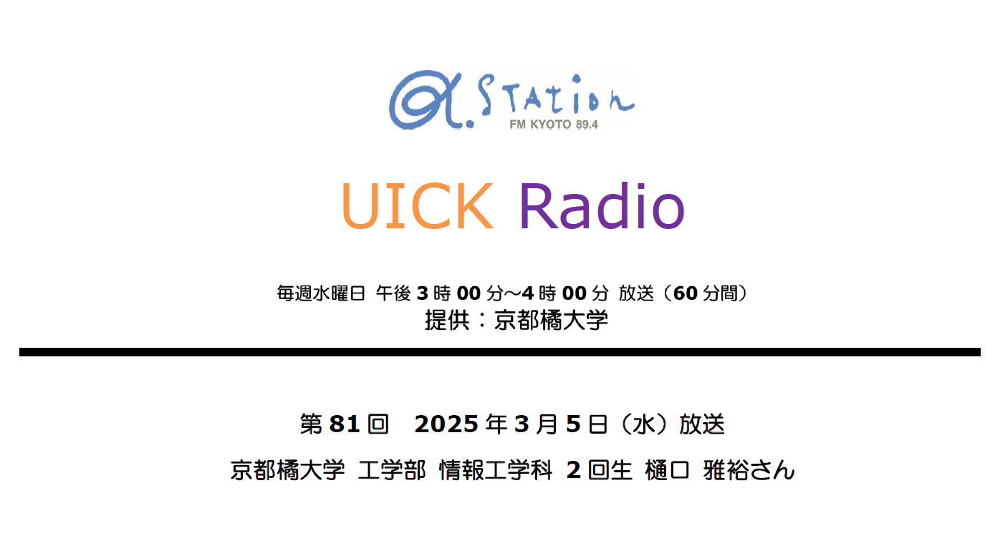

このたび、α-STATION（FM京都）の「UICK Radio」 に出演することが決まりました！
番組では、私の大学での研究活動や日常についてお話しする予定です。
放送日時：3月5日(水)15:00〜16:00
番組名：UICK Radio（FM京都 α-STATION）
関西エリアのFMラジオはもちろん、Radiko（ラジコ） を使えば全国どこでも視聴可能です。
ぜひチェックしてください！
α-STATION 「UICK Radio」に
出演します！
